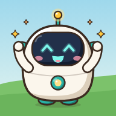

Mat Sains
Pilih tempat di peta, lalu main bersama Si Cil.
Untuk orang tua dan guru
Setiap permainan mengajarkan satu konsep matematika atau fisika lewat mekaniknya sendiri. Anak tidak menjawab kuis. Anak menimbang, melompat, memotong, dan menembak, lalu dunia game menunjukkan hasilnya. Angka dan simbol muncul pelan-pelan di samping benda nyata, supaya saat bertemu notasi di sekolah, anak sudah punya gambarannya.
Benda dulu, simbol kemudian
Level awal hanya benda. Angka muncul di samping benda, lalu kalimat matematika, lalu simbol saja.
Tebak dulu, lalu lihat
Sebelum hasil terlihat, anak memprediksi. Prediksi yang meleset tidak dihukum, justru jadi bahan berpikir.
Tanpa nyawa dan timer
Tidak ada tanda salah berwarna merah. Bintang diberikan untuk ketelitian, bukan kecepatan.
Fisika yang jujur
Simulasi mengikuti hukum nyata: benda berat tidak jatuh lebih cepat, ukuran tidak menentukan berat.

Pasang Mat Sains di layar utama
Buka seperti aplikasi, layar penuh, dan tetap bisa dimainkan tanpa internet.